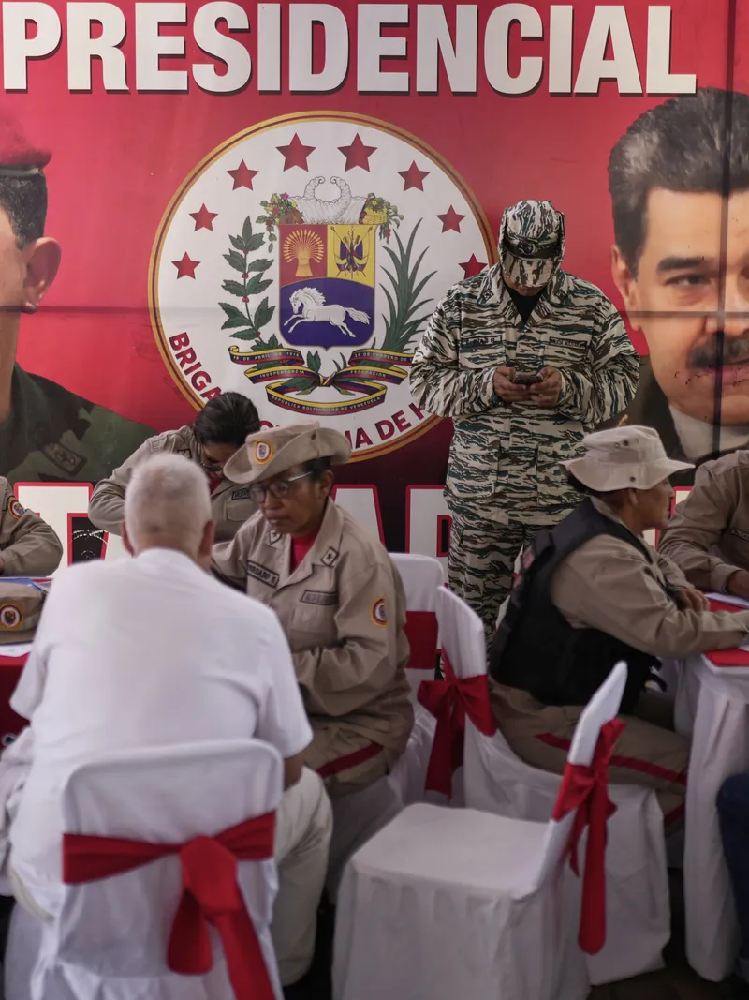

REALCLEARWORLD ·
Venezuela’s Liberation and a Hemisphere Reclaimed
Read the original
As American naval forces and a Marine Expeditionary Unit stand ready in the Caribbean, Venezuelans face, for the first time in nearly three decades, the real prospect that their dictatorship under Nicolas Maduro, with its hunger, repression, and the forced exile of nearly eight million people, could soon give way to their legitimately elected government.
“Maduro’s regime is a criminal structure that has inflicted immense harm on our people,” opposition leader María Corina Machado wrote on X. “It has forced a third of our population to flee, destabilized the region, and created a direct threat to U.S. security. As soon as we liberate Venezuela, millions will return home, and our nation will become the United States’ principal ally for security, trade, energy, and investment.”
With the world’s largest oil reserves and an opposition likely to embrace dollarization after years of hyperinflation and the collapse of the bolívar, her claim should not be taken lightly.
Although moments of hopeful anticipation have come and gone over the years, there are reasons to believe this time could be different. The turn began in April, when Secretary of Defense Pete Hegseth – standing with Panamanian President José Raúl Mulino at the Panama Canal – declared that the U.S. would reengage Latin America through partnership, reimagining the Monroe Doctrine as a 21st-century tool for regional cooperation.
“America will confront, deter and, if necessary, defeat these threats alongside our close and valued partners,” Hegseth said. “Our mission is simple: peace through strength, an America First approach. We’re restoring the warrior ethos, rebuilding our military, and reestablishing deterrence – right here in Central and South America.”
The results came swiftly. Panama moved to transfer Chinese-run ports along the canal to BlackRock. Washington designated the Sinaloa and CJNG cartels as Foreign Terrorist Organizations, with U.S. patrol aircraft reportedly mapping their networks.
Soon after, the White House slapped a 50 percent tariff on Brazilian exports – officially over Bolsonaro’s treatment, but in reality a warning to Beijing and the BRICS bloc for agreeing to trade in local currency amid global warnings of dedollarization.
But words gave way to hard power on August 14, when the Iwo Jima Amphibious Ready Group – carrying the 22nd Marine Expeditionary Unit – entered the southern Caribbean with a cruiser and a submarine in escort.
While some left-leaning governments objected, a new coalition is forming. Argentina, Paraguay, and Ecuador have formally designated the Cártel de los Soles – which Washington links to Maduro’s inner circle – as a terrorist group. Trinidad & Tobago and Guyana have openly supported U.S. operations. Even Brazil’s Lula, though wary of Trump, has withheld recognition of Maduro’s election and responded with restraint.
The reality on the ground is hard to ignore. Across the hemisphere, governments see Maduro not as another caudillo but the architect of one of the worst humanitarian disasters in modern history. Nearly eight million Venezuelans have fled, straining health systems and stability from Colorado to Chile. The exodus alone has forced neighbors to reckon with the costs of propping up his narco-state.
At the same time, China’s deepening role in ports, telecom, and currency swaps has stripped away any illusion of neutrality and countries across the region are quickly realizing in this geopolitical contest, “you’re either with us or against us.”
That is why Venezuela looms so large. For thirty years, it has morphed from a mismanaged narco-state into a forward base for hostile powers. Russia has poured in billions in arms, deployed nuclear-capable bombers, and rotated warships. China has anchored dual-use infrastructure and surveillance networks tying Caracas to the Belt and Road.
And Iran has leveraged the regime as a launchpad for drones, Quds Force operatives, and Hezbollah-linked smuggling routes – drones that sit just 1,200 miles from Miami and within range of U.S. targets. While Russia and Iran wage wars in Europe and the Middle East, and China fuels tensions in the Indo-Pacific, all three have, for a generation, partnered with Caracas to export instability much closer to home.
As Iran’s former defense minister, Mohammad Reza Ashtiani, once explained, “Latin American countries are of special significance in Iran’s foreign and defense policy.”
The end of Maduro’s regime may not come through a single act of force – and it may not need to – but its fall is finally within reach. For the United States and its partners, the choice is stark: either stand with the Venezuelan people to restore freedom and stability in our own hemisphere, or leave a vacuum that Russia, China, and Iran will gladly continue to fill.